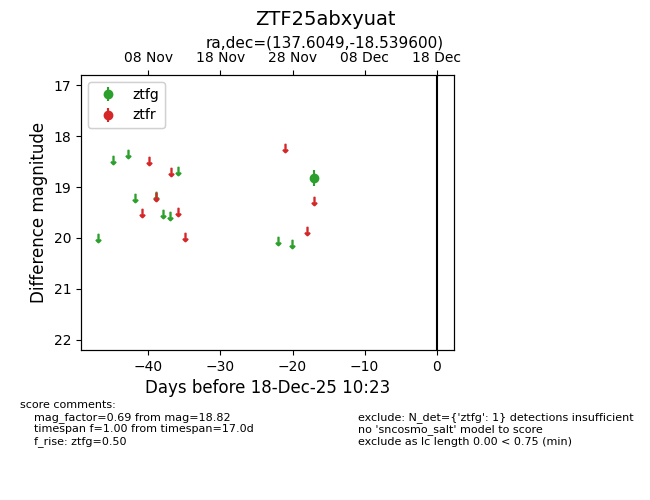
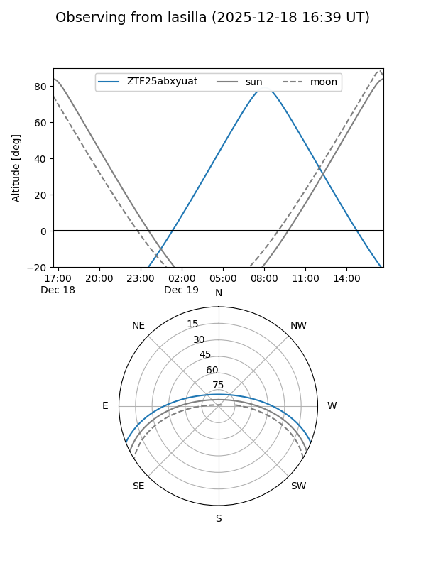
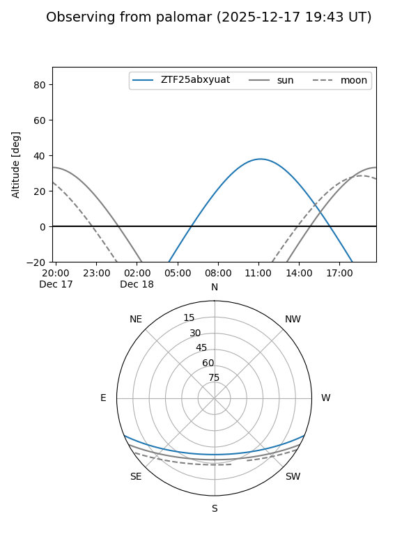

ZTF25abxyuat
Target ZTF25abxyuat at 2025-12-18 11:17
Aliases and brokers:
FINK: fink-portal.org/ZTF25abxyuat
Lasair: lasair-ztf.lsst.ac.uk/objects/ZTF25abxyuat
ALeRCE: alerce.online/object/ZTF25abxyuat
alt names
ZTF25abxyuat (ztf,fink_ztf)
Coordinates:
equatorial (ra, dec) = 137.6049,-18.53960
equatorial (HMS+DMS) = 09:10:25.18,-18:32:22.56
galactic (l, b) = (247.1285,+19.62874)
Photometry
last ztfg=18.82
1 ztfg detections
Lightcurve

Visibility


Additional plots